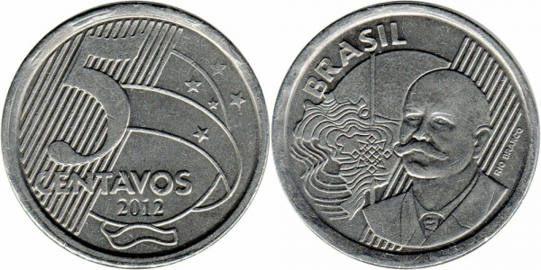

Cobertura do 3º Encontro das Multicoleções do Estado do Ceará
O Plano Real já tem 30 anos, tem duas famílias de estampas tanto em cédulas como moedas, poucas variações comemorativas, mas algumas pérolas como a conhecida como "DH",uma peça com tiragem muito baixa, algumas peças iguais a essa fica cobiçadas devido a dificudade de encontra-las no meio circulante, outros fatores também tornam uma moeda valiosa como o defeito de fabricação, o que chamamos de anomalias, ou peças híbridas, quando o lado da cara é de uma moeda e o lado da coroa é de outra, abaixo um exemplo da moeda de 50 centavos com o cunho de reverso da 5 centavos conhecida como 50 centavos sem o zero, veja a imagem abaixo:
